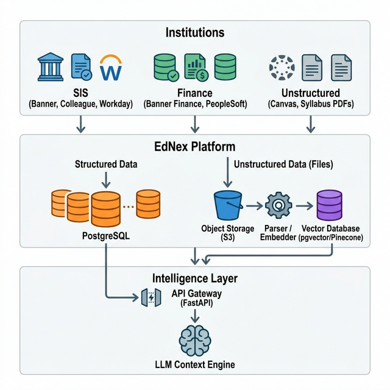

The Student Success Navigator requires a robust, scalable data backbone that bridges institutional data systems with an AI-powered student-facing app. This document proposes a three-layer hybrid architecture designed to handle both structured data (grades, balances) and unstructured data (PDF syllabi, policies).
LAYER 1 — Integration Layer: Institutions' source systems (APIs, SFTP, LMS) → EdNex (Central Staging Platform)
LAYER 2 — EdNex Hybrid Staging:
➜ Structured Data → Relational
Database (PostgreSQL)
➜ Unstructured Data → Object Storage (Files) & Vector Database
(Embeddings)
LAYER 3 — Intelligence Layer: EdNex → Context Assembly & Semantic Search → LLM Engine
"The central convergence point where all institutional educational data flows meet, normalize, and become actionable intelligence."
EdNex serves as the institution-agnostic data hub. It is a multi-tenant cloud platform — one EdNex instance serves multiple institutions simultaneously, each securely isolated via tenant IDs and Row-Level Security.
| DataStream | Standard System Integrations | Data Contained (Structured + Files) |
|---|---|---|
| SIS Stream | Ellucian Banner, Colleague, Workday Student | Enrollment, GPA, standing, transcripts (PDF) |
| Finance Stream | Banner Finance, PeopleSoft | Financial aid status, balances, hold policies (Docs) |
| Advisor Stream | EAB Navigate, Starfish, Salesforce | Advisor notes, intervention flags, advising guides |
| Catalog Stream | Canvas LMS, Acalog | Course descriptions, full PDF syllabi, reading materials |
Institutions have wildly varying technical maturities. EdNex must support three distinct integration patterns to onboard any university confidently.
Periodic pulling from modern REST/GraphQL APIs (e.g., Canvas LMS, Workday Student). Nightly Airbyte syncs pull incremental changes directly into EdNex.
Institution exports Daily Delta files (students.csv) to EdNex's hosted secure FTP.
A cloud ETL engine detects, parses, validates, and loads data into structured tables.
Files are uploaded via an Admin Portal. PDFs are saved to Object Storage, while a background parser extracts text, creates semantic embeddings, and populates the Vector DB.

Figure 1: Complete end-to-end data flow managing both structured databases and unstructured document processing.
Recommended for Rapid Scale & Built-in Hybrid Support
Target for Massive Enterprise Data Lakes
When a student interacts with the Navigator App, EdNex seamlessly merges Structured Data and Unstructured Documents.
User Prompt:
"Can I register for biology next week if my tuition isn't fully paid?"
The LLM Prompt reads: ---------------------------------------- Context: Jane has a $400 balance and a hold. Institution Handbook states >$200 prevents registration. Original Source: [student_handbook_2025.pdf linked from Object Storage] Question: Can I register? ----------------------------------------